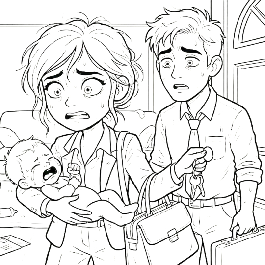
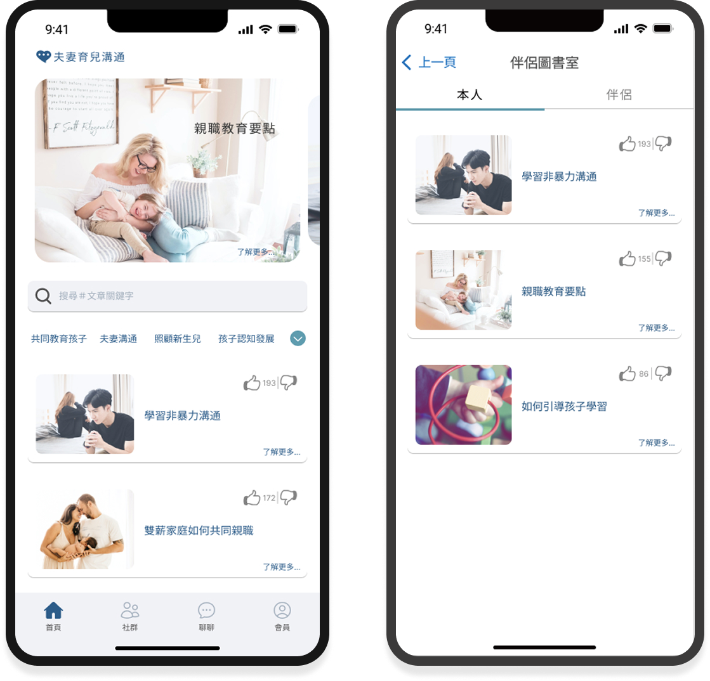
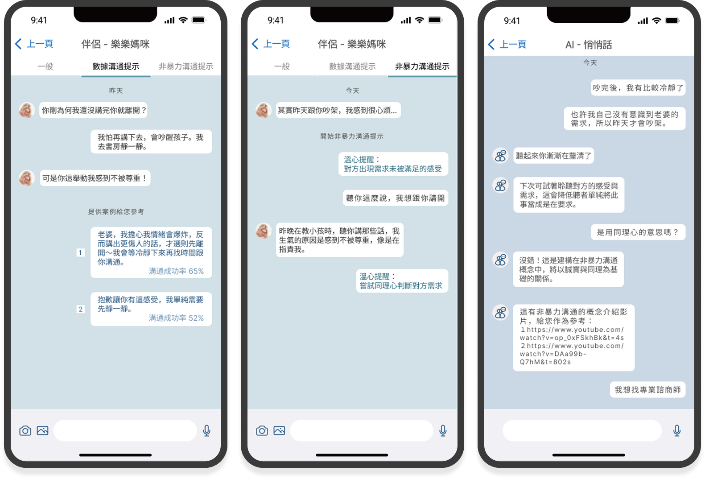

雙薪夫妻育兒溝通之
服務設計
透過訪談研究與 設計思考，解決雙薪家庭在角色轉換期的溝通痛點。這是一個關於「非暴力溝通」的數位實驗。

育兒溝通 App
研究
發現雙薪夫妻的育兒困境
透過前期的背景調查，我們歸納出雙薪家庭面臨的四大核心挑戰，並以此作為訪談的基礎。

1. 角色轉換的失衡
孩子出生後，夫妻面臨劇烈的角色轉變。雙薪結構下，兩人在「工作者」與「父母」的角色切換中難以取得平衡。
2. 負面情緒的骨牌效應
夫妻間若習慣以負面情緒溝通，這種張力容易無意間轉嫁給孩子，進而影響其性格發展。
3. 被壓縮的溝通時間
上班與育兒佔據了大部分精力，嚴重壓縮了夫妻單獨相處與深度溝通的品質時間。
4. 現有市場的缺口
市面上雖有很多育兒 App，但多著重於「紀錄」或「知識」，缺乏針對「雙薪夫妻溝通議題」的解決方案。
擬定訪談大綱
為了驗證上述假說，我們針對目標族群設計了以下深度訪談問題。
Q1 下班後在育兒上，夫妻的分工模式為何？
Q3 習慣在什麼時間、用什麼方式溝通育兒問題？
Q5 夫妻發生爭執時，您會怎麼處理？效果是差和最好的方式？
Q7 是否曾經在孩子面前起爭執？是否影響到孩子？
Q9 若用 App 溝通時，提供「提示句子」功能，您會想使用嗎？
Q2 在育兒上最常需要溝通的問題是？(請提三項並說明原因)
Q4 育兒溝通當下，若問題解決方法沒取得共識的感受？
Q6 您會希望怎麼改善上述的問題？
Q8 會想使用有關改善溝通的 App 嗎？原因為何？
Q10 夫妻所使用的通訊軟體為何？
設計思考
人物誌
我們訪談了多組雙薪夫妻，並歸納出主要的人物誌 (Persona)。
主要照顧者
| 年齡 | 28-42 歲 |
| 狀態 | 已婚 / 育有 1-2 子 |
| 工作 | 正職/兼職 |
| 居住地 | 台灣 |
細心 / 敏感 / 應變強 / 重家庭關係 / 對孩子的耐心被磨掉 / 更同理孩子的狀況
📄 簡述
生活重心轉移至家庭，工作配合育兒作息，承擔大部分照顧與家務責任。作為主要決策者，常因教養觀念差異與伴侶或原生家庭產生摩擦。因育兒瑣事繁多，當下難以溝通，傾向事後冷靜再透過文字訊息表達需求。
� 痛點 (Pains)
- 有孩子後，增加夫妻爭執。
- 希望另外一半多幫一點忙。
- 卡在還孩子跟伴侶間的爭執時，相對較為痛苦。
🎯 目標 (Goals)
- 減少育兒上的爭執。
- 增加溝通上的正向效果。
- 讓非主要照顧者理解孩子現況。
非主要照顧者
| 年齡 | 32-47 歲 |
| 狀態 | 已婚 / 育有 1-2 子 |
| 工作 | 正職 |
| 居住地 | 台灣 |
有想法 / 在意面子 / 應變能力好 / 重伴侶關係 / 保持心態樂觀 / 尊重主要照顧者
📄 簡述
肩負家庭經濟重擔，因工時長無法兼顧育兒細節，日常照顧多由伴侶主導。因不熟悉流程，協助時常因反覆詢問或擅自行動而引發衝突，希望能建立相互尊重的合作模式。此外，因陪伴時間少對孩子較生疏，渴望在工作之餘了解孩子現況，縮短與主要照顧者的認知落差。
� 痛點 (Pains)
- 有孩子後，夫妻為育兒爭執。
- 希望在育兒事宜做協助者。
- 被主要照顧者指定用他的方式育兒。
🎯 目標 (Goals)
- 了解孩子的現況和需求。
- 取得第三方給予意見或方法。
- 找到與主要照顧者良好的溝通方式。
旅程地圖
我們訪談了多組雙薪夫妻，並歸納出主要的人物誌 (Persona) 的一日旅程。
(忙碌/責任)
趕著準時閃人，準備接孩
拜託老闆別這時候加工作
催孩子吃飯，注意營養
為什麼都不講不聽？好累
檢查作業，SOP流程控管
隊友不要亂插手破壞規矩
唸故事書，哄睡儀式
趕快睡，媽媽想下班
滑手機，吃宵夜，放空
終於不用講話了
半夜起來餵奶或哄睡驚醒的孩子
睡眠一直被中斷
像打仗一樣準備出門
快遲到了！
(支援/距離)
處理客戶急件，加班中
業績壓力大，今天又要晚回
試著餵飯，或在旁邊滑手機
老婆臉色不好，我該做什麼？
幫忙洗澡但弄得溼答答
我只想幫忙，幹嘛一直唸
陪小孩玩遊戲，或是幫忙哄睡
難得陪孩子，開心就好
想找伴侶聊天分享工作
此時，伴侶不一定會想理我
呼呼大睡
好累，終於能休息
協助買早餐，或是送孩子上學
今天也要加油
(餵飯/規矩)
(SOP被打亂)
(一人哄睡一人收)
(一起追劇)
(送上學)

← 左右滑動觀看完整旅程 →
App 功能與規劃
關鍵的服務規劃
基於雙薪夫妻的育兒痛點，將產品能全方位覆蓋從「資訊獲取」到「深度互動」的需求。
增強伴侶的深度互動
- 溝通引導功能
- 非暴力溝通提示
- 數據化溝通提示
- 文章收藏分享交流
- 伴侶共編收藏的知識
多元資訊和系統整合
- 相關文章 (收藏/讚)
- 社群留言板
- AI 智能輔助內容
- 專業人士見解
精準專業的搜尋與詢問
- 搜尋相關文章
- 搜尋社群 Q&A
- 尋求專業人士
- 先跟AI進行詢問
設計洞察關鍵
在規劃關鍵的服務時，需對應訪談整理出的結果，核心在於如何將「育兒知識」、「AI輔助」、「數據輔助」與「專家介入」引入功能規劃中，滿足雙薪夫妻在育兒溝通上的需求。
App核心架構
基於使用者研究，我將功能模組化為四大核心區域，確保雙薪家庭能快速找到所需工具。

- 相關的專業知識
- 搜尋相關知識
- 文章收藏
- 文章分享
- 向有經驗者提問
- 參考第三方回答
- 搜尋相關經驗
- 經驗分享專區
- 數據溝通提示
- 非暴力溝通
- AI 悄悄話
- 搜尋專家諮詢
- 個人資料
- 伴侶圖書館
- 提問紀錄
流暢直觀的核心操作體驗
透過扁平化的層級設計，我們確保用戶在「獲取資訊」與「深度溝通」之間能無縫切換。
關鍵洞察

I. 建立共識的知識庫
爭吵往往源於觀念不合。我們設計了「伴侶圖書館」，當一方收藏文章時，另一方也能看見。讓專知識成為雙方的溝通橋樑，而非說教的工具。

II. AI 情緒教練與非暴力溝通
這不只是聊天室，更是情緒緩衝區。
- 非暴力溝通提示
系統偵測攻擊性字眼，主動提示「換句話說」的選項。 - 數位化溝通建議
用圖表呈現雙方的情緒佔比，讓「感覺」變成客觀的「數據」。
III. SUS易用性測試
透過 31 份有效問卷進行 SUS (System Usability Scale) 易用性測試。結果顯示，無論性別，使用者對於 App 的接受度皆達到良好標準。
(Grade B)
「T檢定顯示兩者之間無顯著差異 (P>0.05)。這證明了我們的設計不僅解決了女性照顧者的焦慮，也成功引導了男性參與育兒溝通，達到了雙贏的局面。」